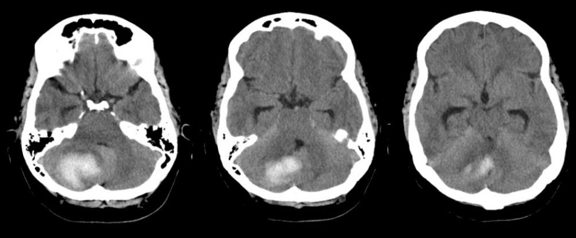

In this project, We use machine learning algorithms to detect if
there exists an intracranial hemorrhage (ICH) in computed tomography
(CT) scans and identify its subtypes. To achieve this, we implemented
three machine learning models using the RSNA ICH dataset in hopes of
finding a good model in achieving a high accuracy detection score


Heart Failure Prediction with Classification Models workload applying machine learning algorithms to predict heart failure in a dataset.
Tableau Project where I implemented a dashboard showcasing recent data on COVID-19 Infections throughout the world.

Data exploration using MSSQL server and recent COVID-19 Data. Some queries here were used for later Tableau visualizations.
Successfully implemented a GUI for an airline reservation system and designed an airline database using SQL